LIU Leave — User Guide
A complete guide to using the leave management system for Lebanese International University.
For professors, admins, and superadmins.
What is LIU Leave?
LIU Leave is the official leave management system for LIU teaching staff. Professors use it to submit their leave requests for the academic year. Admins use it to review those requests, monitor campus absences, and export reports.
Everything happens through your browser — no installations, no forms to print before submitting. Once an admin approves your request, you can print the official form directly from the app.
User Roles
Every user has one of three roles. Your role determines what you can see and do in the app.
| Role | Who | What they can do |
|---|---|---|
| Professor | All teaching staff | Submit one leave request per academic year, view its status, print the approved form |
| Admin | Administrative staff | All professor actions, plus review requests, view statistics, manage users and settings |
| Superadmin | One designated person | All admin actions, plus promote/demote other admins and transfer the superadmin role |
New users always start as Professors. An admin can promote them to Admin. There is always exactly one Superadmin in the system.
Signing In
LIU Leave uses Google sign-in — there is no separate username or password to remember.
-
Open the app and click "Continue with Google"
You will be taken to Google's account chooser page.
-
Select your LIU Google account
Use the account associated with your LIU email address.
-
You are redirected back to the app
First-time users are taken to the onboarding page. Returning users go straight to the dashboard.
Signing out: Click your profile picture or name in the top navigation bar, then select "Sign out".
Onboarding
The first time you sign in, the app asks for your campus and department before you can continue. This is a one-time step — you only see this screen once.
-
Select your campus
Pick from the dropdown list of LIU campuses.
-
Select your department
Pick from the dropdown list of departments.
-
Click "Continue"
You are taken to your dashboard. Your campus and department are saved to your profile.
You can change your campus or department later at any time from the Profile page.
Your Dashboard
After signing in, professors land on their personal dashboard. The dashboard shows:
- A welcome banner with your name, the current academic year, your campus, and your department
- Your leave request status (or the submission form if you haven't submitted yet)
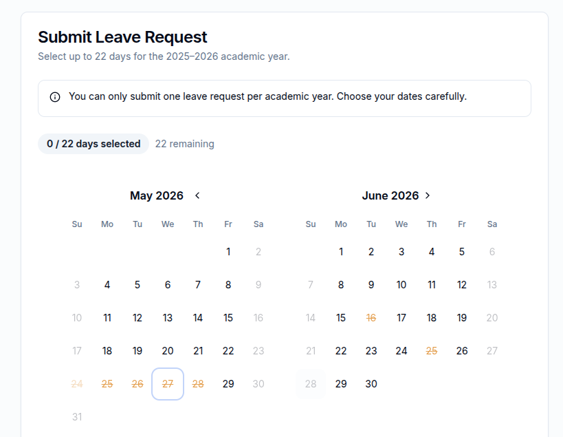
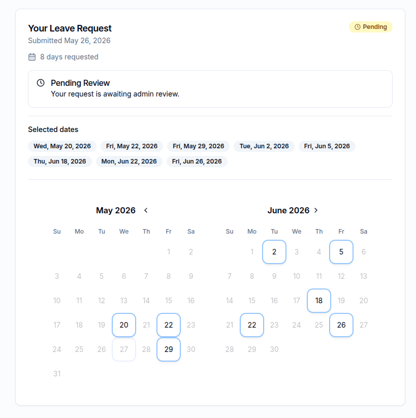
Submitting a Leave Request
Leave requests are submitted through an interactive calendar on your dashboard.
-
Click on the days you want to take off
The calendar shows the full academic year. Click any working day to select it — it turns blue. Click again to deselect.
-
Check your day count
A counter below the calendar shows how many days you have selected and how many remain. The maximum is set by the admin (default: 22 days).
-
Click "Submit Request"
Your request is saved immediately. The calendar is replaced by a status card showing your selected dates with a yellow "Pending" badge.
You can only submit one request per academic year. Choose your dates carefully before submitting. If your request is rejected, you will be able to resubmit with different dates.
What you cannot select
- Weekends — automatically grayed out
- Public holidays — dates blocked by the admin (shown in a different color)
- Dates outside the academic year — the current academic year runs September 1 to August 31
Submissions may be closed. If the admin has closed submissions for the period, a "Submissions Closed" message appears instead of the calendar. Check back later or contact your admin.
Tracking Your Request Status
Once you submit, your dashboard switches to a status card that updates in real time.
| Status | Color | What it means |
|---|---|---|
| Pending | Yellow badge | Your request is waiting for an admin to review it. No action needed from you. |
| Approved | Green badge | Your leave has been approved. A Print button appears so you can download your official leave form. |
| Rejected | Red badge | Your request was not approved. The admin usually includes a comment explaining why. You can submit a new request with different dates. |
If the admin added a comment to your request (either with an approval or a rejection), it appears in a highlighted box on your dashboard.
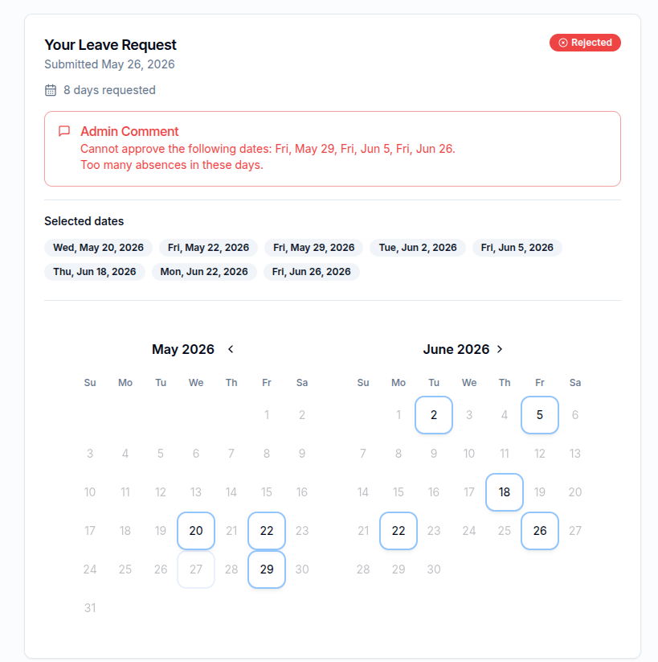
Printing an Approved Form
Once your request is approved, a Print button appears on your dashboard (and on the admin's detail page for your request).
-
Click "Print"
Your browser's print dialog opens with a formatted version of your leave request.
-
Print or save as PDF
Select your printer, or choose "Save as PDF" from the destination dropdown to keep a digital copy.
Tip: The print view is clean — navigation, buttons, and the admin conflict analysis are automatically hidden, so only the relevant leave details appear on the printed page.
Your Profile
Click your name or avatar in the top navigation to access your Profile page. Here you can update:
- Your campus
- Your department
Changes take effect immediately. Your updated campus and department will be shown on your dashboard and on all future leave requests.
Entering the Admin Panel
When an admin logs in, the dashboard shows a role picker card instead of a leave form. Choose how to proceed:
If you choose "View as Professor," a yellow banner appears at the top of the page with a link back to the Admin Panel.
The top navigation bar gives admins quick access to:
- Admin Dashboard — overview and quick actions
- Submissions — all leave requests
- Statistics — heatmap, campus breakdown, professor breakdown
- Users — manage user roles
- Settings — configure thresholds, holidays, and availability
Admin Dashboard
The admin dashboard gives you a snapshot of the current academic year at a glance.
Summary Cards
Four cards across the top show the total request count for the current academic year, broken down by status: Total, Pending, Approved, and Rejected.
Pending Reviews
A table of all unreviewed requests. Each row shows the professor's name, campus, and number of days requested. You can quick-approve directly from here or click the arrow icon to open the full review page.
This Week's Absences
Shows which professors have approved leave days falling in the current week (Monday to Sunday). This helps you know at a glance who is not on campus right now.
Overlap Alerts
A count of how many days have too many professors absent from the same campus at once. Click "View full analysis" to go to the Statistics page for details.
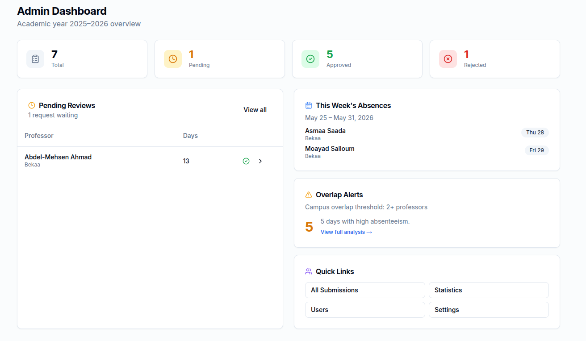
Submissions List
The Submissions page lists every leave request for the selected academic year. You can filter the list to find exactly what you need.
Filters
- Academic Year — switch between current and past years
- Campus — show only requests from a specific campus
- Status — show only Pending, Approved, or Rejected
- Search — find a specific professor by name or email
The Table
Each row shows the professor's name, campus, department, number of requested days, submission date, and current status. Pending requests have an inline Quick Approve button for fast processing.
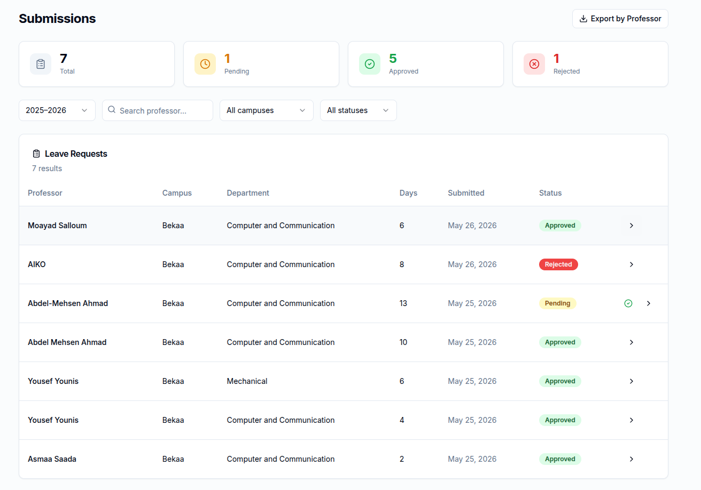
Reviewing a Leave Request
Clicking the arrow on any request row opens its full detail page. This is where you review, approve, or reject the request.
Request Details
The top card shows the professor's full name, campus, department, number of days requested, and when it was submitted. If it has already been reviewed, the reviewer's name and review date are shown too.
Selected Dates
All requested dates are listed as date badges and displayed on a mini calendar so you can visualize the pattern of absence.
Conflict Analysis
This section helps you make an informed decision. For each requested date, the system checks how many other professors from the same campus already have approved leave. Dates that would push absenteeism above the configured threshold are highlighted with a warning flag.
- Campus alert — too many professors absent from the same campus on one day
- Department alert — too many professors absent from the same department on one day
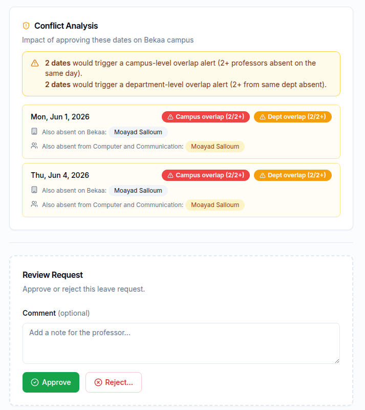
Approving or Rejecting
At the bottom of the page (for pending requests only) is the review form:
-
Write a comment (optional for approval, required for rejection)
The professor will see this comment on their dashboard.
-
Click "Approve" or "Reject"
The status updates immediately. The professor's dashboard reflects the change on their next page load.
Deleting a request: A trash icon in the top-right corner of the detail page lets you permanently delete the request. Use this only when a request was submitted by mistake.
Quick Approve
Both the Admin Dashboard and the Submissions List have a Quick Approve button (a small checkmark icon) next to each pending request. Clicking it immediately approves the request without opening the detail page — no comment required. Use this for straightforward approvals where you don't need to review the conflict analysis.
Statistics Page
The Statistics page gives a high-level view of approved leave across the year. Three summary cards at the top show:
- Approved Days — total leave days across all professors
- Professors — number of professors who have approved leave
- Campus Overlap Days — days where a campus exceeded the absenteeism threshold
Below the cards, three tabs let you explore the data in different ways.
Leave Heatmap
The Heatmap tab shows a calendar grid of the full academic year, similar to a GitHub contribution graph. Each square is one day.
| Color | Meaning |
|---|---|
| Gray | No approved leave on this day |
| Light blue | 1 professor on leave |
| Medium blue | 2 professors on leave |
| Dark blue | 3 professors on leave |
| Very dark blue | 4 or more professors on leave |
Each square also shows the day number of the month (e.g. "14" for the 14th) so you can identify dates without hovering.
Hover to see who is absent
Hover over any day to see a details panel below the grid. It shows the full date, how many professors are on leave, and a card for each professor with their name and campus.
By Campus Tab
This tab shows a breakdown of approved leave statistics for each campus:
- Number of professors with approved leave from that campus
- Total approved leave days for that campus
- Busiest month (the month with the most leave days)
- A list of Campus Overlap Days — specific dates where too many professors were absent at once, along with their names
- A list of Department Overlap Days — same, but narrowed to a specific department (if enabled in settings)
In the example below, viewing all professors across the campus shows 5 conflict days:
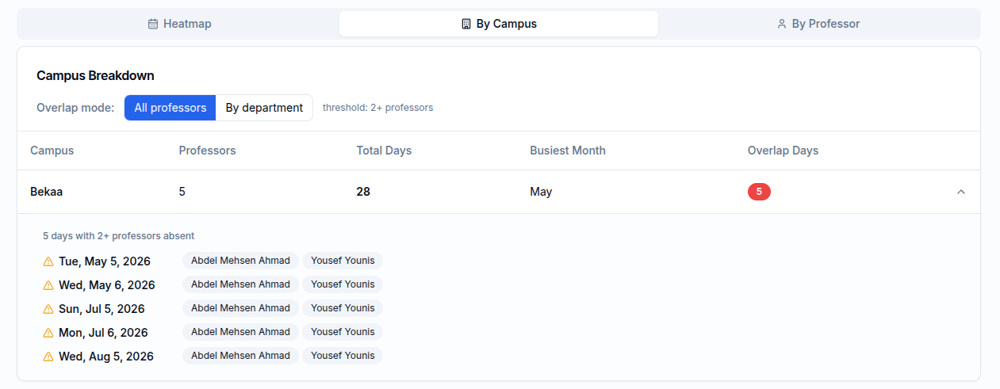
When the Department Overlap filter is applied, those same days may fall below the department threshold — showing no overlap at the department level:
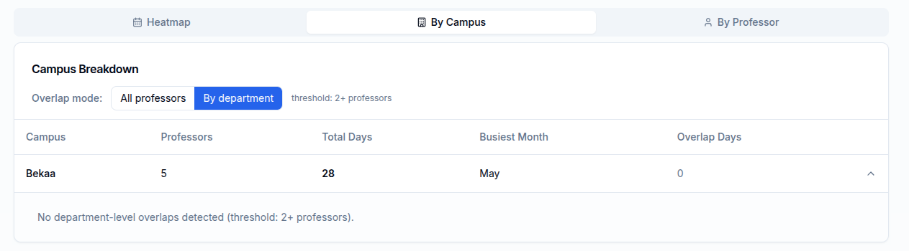
By Professor Tab
Lists every professor with approved leave, sorted by total days (highest first). Shows their name, campus, department, and day count. Expanding a row reveals all their specific leave dates.
Exporting Data
Admins can download leave data as Excel (.xlsx) files. Two formats are available from the Statistics page and the Submissions list.
Export by Professor
One sheet per professor. Each sheet lists that professor's approved leave dates. Useful for HR records organized by person.
Export by Day
A single sheet where each row is one date that has absences. The first column is the date, and the following columns are the names of professors on leave that day. Useful for daily scheduling and planning.
Managing Users
The Users page (Admin → Users) lists every registered user with their name, email, campus, department, and role.
Role Badges
- Professor — default role for new users
- Admin — can access the admin panel
- Superadmin — shown with a crown icon in violet
Changing a User's Role
The last column of the table has action buttons that depend on your role:
| If you are an Admin, you can… | If you are Superadmin, you can also… |
|---|---|
|
Promote a Professor to Admin (button: "Promote to Admin") |
Demote an Admin back to Professor (button: "Demote to Professor") |
| — |
Transfer the superadmin role to any user (violet button: "Transfer Superadmin") |
You cannot change your own role. Your row shows "cannot change own role" instead of action buttons.
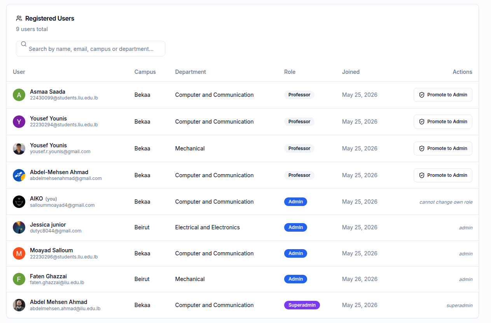
Settings
The Settings page (Admin → Settings) has four sections.
1. Submissions Toggle
A global on/off switch that controls whether professors can submit new leave requests.
- Open — professors see the date picker and can submit
- Closed — professors see a "Submissions Closed" message instead
Typically, submissions are opened at the start of each academic year and closed once the submission deadline passes.
2. Thresholds & Limits
Three configurable numbers that affect alerts and the date picker:
| Setting | Default | Effect |
|---|---|---|
| Max Leave Days per Professor | 22 | Professors cannot select more than this many days in the date picker |
| Campus Overlap Alert (≥) | 3 | A warning flag appears in the conflict analysis and statistics when this many professors from the same campus are absent on the same day |
| Department Overlap Alert (≥) | 2 | Same as campus overlap but scoped to one department. Can be switched on or off. |
After changing any of these values, click Save Settings.
3. Holidays
See the Managing Holidays section below.
4. Danger Zone — Reset
A "Reset Database" button at the bottom of the settings page deletes all users and leave requests after asking for confirmation. Campuses, departments, holidays, and settings are preserved. This is intended for clearing test data or resetting between academic years.
This cannot be undone. All professors will need to sign in again and re-onboard after a reset.
Managing Holidays
Holidays are dates that professors cannot select as leave days. Weekends are blocked automatically — this section is for adding public holidays, university closures, or any other non-working days.
Adding a Holiday Manually
-
Pick a date using the date input
In the Holidays section of the Settings page.
-
Optionally type a label
For example: "Eid Al-Adha" or "University Closure Day." The label is shown to professors when they hover over the grayed-out date.
-
Click "Add Holiday"
The holiday appears in the list immediately and is blocked in the professor's date picker.
Removing a Holiday
Click the trash icon on the right side of any holiday in the list to remove it. The date becomes selectable again in the date picker immediately.
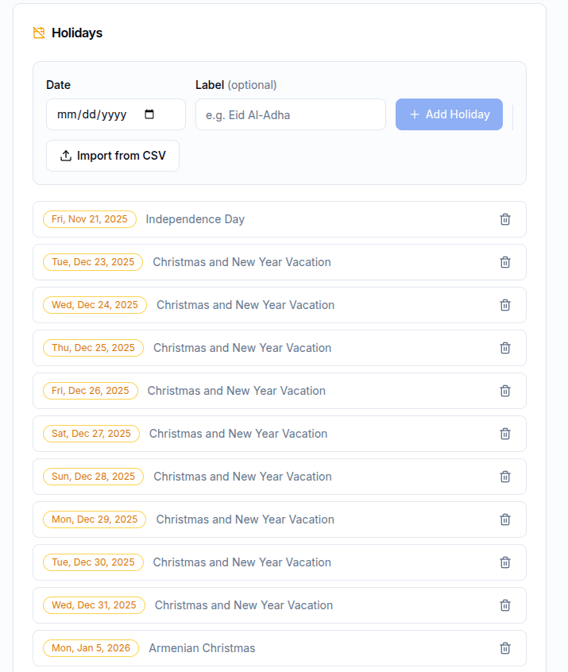
Importing Holidays from CSV
Instead of adding holidays one by one, you can import the full LIU academic calendar in bulk from a CSV file.
-
Click "Import from CSV"
A file picker opens. Select the LIU academic calendar CSV file.
-
A preview dialog opens
The app automatically reads the CSV, detects the academic year, and lists every date entry it found. All entries are checked by default.
-
Uncheck any dates you don't want to import
Use "Select all" and "Deselect all" links at the top for bulk selection. Each row shows the date and its label (e.g. "Winter Break").
-
Click "Import X Holidays"
Selected entries are saved. Dates that already exist are skipped automatically — no duplicates. A confirmation toast tells you how many new holidays were created.
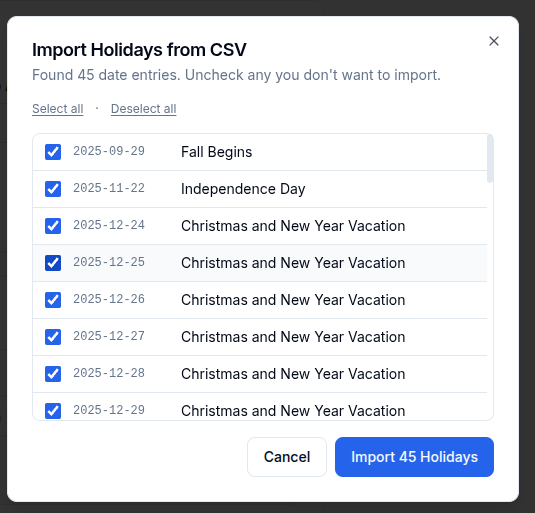
Supported formats: The CSV parser understands single dates ("September 1: First Day"), date ranges in the same month ("October 14-18: Mid-semester Break"), and cross-month ranges ("December 23-January 5: Winter Break").
Superadmin Role
The Superadmin is a special elevated admin. In addition to everything a regular admin can do, the Superadmin can:
- Demote other admins back to Professor
- Transfer the Superadmin role to another user
The Superadmin is identified in the Users table by a violet crown badge 👑 Superadmin. There is always exactly one Superadmin — the role cannot be duplicated.
Transferring the Superadmin Role
When the current Superadmin wants to hand the role to someone else, they use the Transfer feature from the Users page.
-
Go to Admin → Users
Find the person you want to make the new Superadmin.
-
Click the violet "Transfer Superadmin" button
A confirmation dialog appears: "Transfer Superadmin to [name]? They will become the new Superadmin. You will be demoted to Admin and signed out immediately."
-
Confirm the transfer
The target user is promoted and you are demoted at the same time — both changes happen together so there is never a moment with no Superadmin.
-
You are automatically signed out
After a brief moment, you are signed out and taken back to the sign-in page. Sign back in to continue using the app as a regular Admin.
Note to the new Superadmin: Sign out and sign back in to immediately see your updated role and crown icon. Otherwise the change takes effect automatically within 15 minutes.
This action cannot be undone without the new Superadmin's cooperation. Only transfer the role to someone you fully trust, as they will immediately have full superadmin access.
© 2025 BEEhivelab, School of Engineering — Lebanese International University